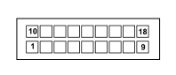

M001D BODY COMPUTER (FRONT)
- Path
- Electrical equipment > 3 CONNECTORS > M INTERMITTENT AND TIMED ELECTRONIC DEVICES > M001 BODY COMPUTER > M001D BODY COMPUTER (FRONT)
- Kind
- connector pinout (pin -> wire colour -> other end)
- Applies to
- engines: 1.3 JTD 16v; all production periods
- Interactive page
- https://sloeber94.github.io/elrnDB-fPnd/en/#/169003401
Applies to: engines: 1.3 JTD 16v; all production periods

Wiring | Colour |
|---|---|
- |
Pin | Cable | Destination | |||
|---|---|---|---|---|---|
Sec.. | Colour | Node | Connect. | Pin | |
4 | 0,5 | BG (white with yellow stripe) | 11 | ||
6 | 0,35 | RV (red with green stripe) | 65 | ||
13 | 0,5 | HV (grey with green stripe) | 66 | ||
14 | 0,5 | HN (grey with black stripe) | 13 | ||
16 | 0,35 | HM (grey with brown stripe) | 69 | ||
18 | 0,5 | HB (grey with white stripe) | 23 | ||
Topics linked from this page (4)
Topics that link to this page (23)
- B001D JUNCTION UNIT (FRONT)
- B001D JUNCTION UNIT (FRONT)
- B001D JUNCTION UNIT (FRONT)
- B001D JUNCTION UNIT (FRONT)
- B001D JUNCTION UNIT (FRONT)
- B001D JUNCTION UNIT (FRONT)
- B001D JUNCTION UNIT (FRONT)
- D097G SHORT CIRCUITING COUPLING (FRONT)
- D097G SHORT CIRCUITING COUPLING (FRONT)
- D097H SHORT CIRCUITING COUPLING (FRONT)
- M010B ENGINE MANAGEMENT ECU (FRONT)
- M010B ENGINE MANAGEMENT ECU (FRONT)
- M010B ENGINE MANAGEMENT ECU (FRONT)
- M010B ENGINE MANAGEMENT ECU (FRONT)
- M010B ENGINE MANAGEMENT ECU (FRONT)
- M010B ENGINE MANAGEMENT ECU (FRONT)
- M050 ABS CONTROL UNIT (FRONT)
- M050 ABS CONTROL UNIT (FRONT)
- M050 ABS CONTROL UNIT (FRONT)
- M051 Braking system control unit (FRONT)
- M051 Braking system control unit (FRONT)
- M054A ROBOTIZED TRANSMISSION CONTROL UNIT (FRONT)
- M054B ROBOTIZED TRANSMISSION CONTROL UNIT (FRONT)